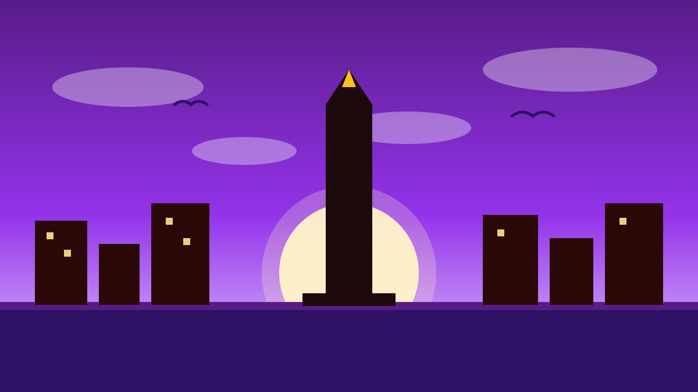

1 / 7

🏛️ NASIONAL
Dunia Kumpul di Jakarta, Indonesia yang Jadi Tuan Rumah
Ribuan pelaku kreatif dari puluhan negara datang ke WCCE 2026 — dan Indonesia yang pegang panggungnya. Geser →
2 / 7
📅
21–23 Oktober, Skalanya Gede Banget
World Conference on Creative Economy (WCCE) 2026 digelar 21–23 Oktober 2026 di Jakarta. Per 15 Oktober, sudah 1.395 partisipan dari 51 negara dan tujuh organisasi internasional yang mengonfirmasi hadir — dan jumlahnya masih bisa nambah.
3 / 7
📜
Misi Besarnya: Jakarta Vision
Salah satu agenda utama konferensi ini adalah menyusun Jakarta Vision on Creative Economy. Dokumen ini diharapkan jadi pijakan buat mengusulkan Resolusi Ekonomi Kreatif di PBB, supaya sektor kreatif masuk agenda pembangunan dunia pasca-SDGs yang berakhir 2030.
4 / 7
🎤
45 Pembicara dari 12 Negara
Daftar narasumbernya lintas benua: ada Co-founder MasterClass dari Amerika Serikat, perwakilan World Creativity Organization dari Swiss, hingga Managing Partner HEVA Fund dari Kenya. Dari Indonesia, ada Gubernur DKI Jakarta Pramono Anung dan CIO Danantara Pandu Patria Sjahrir, plus perwakilan Netflix dan YouTube.
5 / 7
🧩
Empat Klaster yang Dibahas
Konferensi ini fokus ke empat klaster: teknologi, AI, dan transformasi digital; keberlanjutan, ekonomi sirkular, dan desain regeneratif; kekayaan intelektual dan hak pekerja kreatif; serta inklusivitas, ekosistem kreatif, dan pemberdayaan komunitas.
6 / 7
🔁
Ini Hajatan Indonesia Sejak 2018
WCCE adalah inisiatif Indonesia yang pertama digelar di Bali pada 2018, lalu berlanjut ke Dubai 2021, Bali lagi 2022, dan Tashkent 2024. Tahun ini, dengan tema “Inclusively Creative: Collective Continuity”, forumnya balik ke Jakarta. Menurut Menteri Ekraf Teuku Riefky Harsya, visinya bukan sekadar deklarasi, tapi pijakan kuat buat mendorong sektor kreatif ke agenda dunia.
7 / 7
🤔
Efeknya ke lo apa?
Buat lo yang ngonten, desain, bikin musik, atau jualan produk kreatif — ini sinyal kalau karya lo bukan sekadar hobi. Kalau ekonomi kreatif makin diakui dunia, peluang kolaborasi, pendanaan, dan pasar global buat kreator Indonesia ikut kebuka lebar. Saatnya seriusin portofolio.